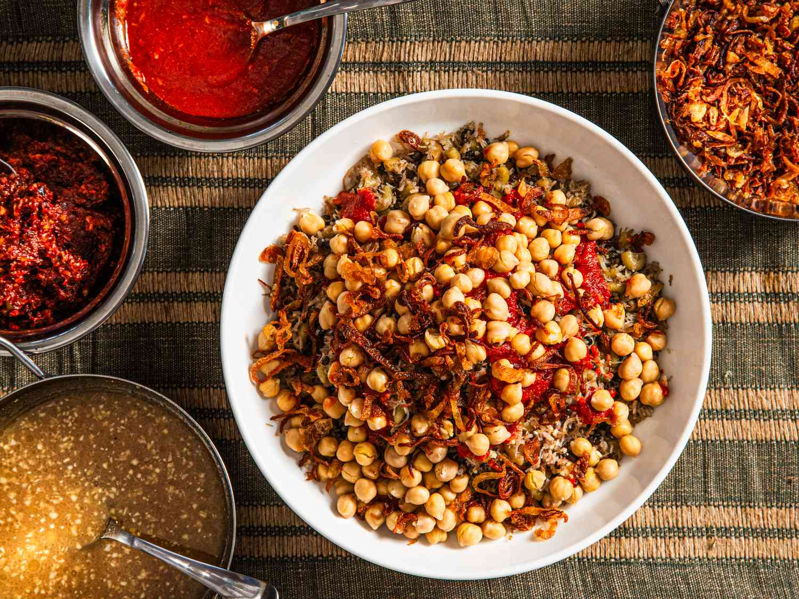

My Favourite food in Egypt
Kushari
Koshary, kushari or koshari (Egyptian Arabic: كشرى [ˈkoʃæɾi]) is Egypt's national dish and a widely popular street food.[1] It is a traditional Egyptian staple, mixing pasta, Egyptian fried rice, vermicelli and brown lentils,[2][3] and topped with chickpeas, a garlicky tomato sauce, garlic vinegar, and crispy fried onions. Sprinklings of garlic vinegar and hot sauce are optional.
Ful and Falafel
Falafel (/fəˈlɑːfəl/; Arabic: فلافل, [fæˈlæːfɪl] ⓘ) is a deep-fried ball or patty-shaped fritter of Egyptian origin, featuring in Middle Eastern cuisine, particularly Levantine cuisines, and is made from broad beans, ground chickpeas, or both.